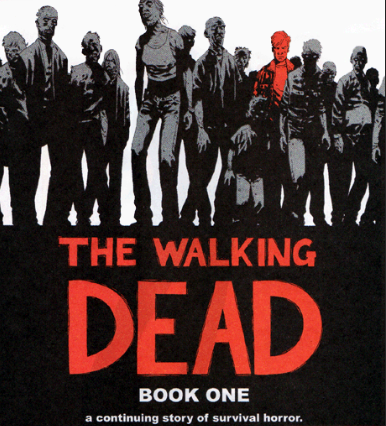

The Walking Dead
vs
The Walking Dead
There are many differences between the comic-book The Walking Dead by Robert Kirkman and the current hit TV-show The Walking Dead on AMC. An indepth review was written by a fan and can be found here.
|
The TV show really deviated from the comic book story line in some major ways. The show added new members to the group while also not casting some of the original survivors that were in the comic. There are also major changes to the story itself as the group of survivors ended up traveling to new locations that were not shown in the original comic. Overall it is an enjoyable show. |
|
|
The comic book is far less forgiving in terms of survival. Kirkman does not hold back when it comes to showing the darker side of humanity. This is what makes the comic great. This is also why the comic is very different from the TV show. The audience is different. While most everyone that read the comic will watch the show not everyone that watches the show will read the comic. As such, the show must be structured to reflect the modern expectation of character and story development. |
 |
Email: vmalchik@mail.ccsf.edu Return Home: Click Here.